Master Research
Synthesis of all research phases — strategy, AARRR, competitive analysis, trust benchmark, and UX patterns. Source of truth before wireframes.
Key Conclusions
News Junkie is the primary segment. Largest audience, fiat on-ramp removes the Web3 barrier, directly aligned with JTBD J2. Confirmed.
No competitor explains "why is the price this?" — our differentiator and foundation of Story-driven UX. Confirmed.
Activation is the biggest risk. Fiat first + 4-screen Robinhood-style onboarding. Skip demo bet (Manifold evidence). Updated.
Regulatory badges (FSCS/SIPC) unavailable to us — replaced with on-chain transparency. Confirmed.
CLOB vs AMM for MVP — open question. Azuro vAMM documented as decentralized path. [?]
Sports = post-MVP. Kalshi 89% of revenue from sports confirms volume potential, but scope exceeds MVP. Events-first launch, sports added after.
Fee model unresolved. 2026 standard: tiered taker fees (0% in free category). "Fee on win" is softer but earns less. Decide before building fee logic. [?]
Riskiest Assumption: the barrier for News Junkies is friction, not motivation. If false, no UX fix works. First-bet completion rate from cold traffic is the test.
EU MiCA active July 2026. Curacao license = blocked in FR, DE, NL, PL, BE. Accessible: LatAm, SEA, non-EU Eastern Europe, Middle East. [?]
Executive Summary
Single visual summary of the product strategy. Overlaps with Section 7 Conclusions by design: glance vs detail. Framework by Jeff Gothelf, Lean UX Canvas v2.
Populated from strategy.md, aarrr.md, competitive-analysis.md, master-research.md.
What we build and for whom
Prediction market platform. YES/NO bets on real-world events. Stablecoins (USDC/USDT). Mobile-first. Goal — the most understandable platform for those who aren't in crypto.
Objectives
| # | Goal | Metric |
|---|---|---|
| O1 | Trusted platform for prediction markets outside the US | MAU, NPS, retention 30d |
| O2 | Web3 betting for users with no crypto experience | % without prior wallet → first bet |
| O3 | Engaged community around events | DAU/MAU ratio, shares/user |
| O4 | Stable trading volume | Monthly volume, revenue/user |
Audience — 3 Segments
News Junkie
Actively follows the news: politics, geopolitics, tech. Has an opinion on everything. Not necessarily into crypto. Wants to "put money" on their opinion simply and without complexity.
Crypto Native
Already in Web3. Has MetaMask. Knows DeFi. Wants to monetize crypto knowledge and find more markets than Polymarket offers.
Crossover Bettor
Already bets on sports. Looking for more intellectual markets where analysis matters. Sports markets = post-MVP scope decision. Revisit after launch with real retention data.
Business Model
| Aspect | Detail |
|---|---|
| Value exchange | Users bring capital and knowledge. Platform provides event markets and resolution mechanism. Platform earns from volume, not house edge. |
| Fee model (TBD) | Option A (industry standard 2026): tiered taker fee per trade — 0% on one free category (geopolitics/politics), up to ~1.8% on crypto at 50/50 midpoint. Polymarket, Kalshi, DraftKings all use this. Option B (our MVP hypothesis): fee on win (~2% on winning payout). "Pay only when you earned" — softer for new users. No direct competitor uses this in 2026. Decision required before building fee logic. |
| Free-entry hook | One category at 0% fee (politics or geopolitics) as an activation lever. Lowers the psychological cost of the first bet. Polymarket uses this for geopolitics markets. |
| Pricing hypothesis | ~2% fee on win (Option B for MVP). Validated at scale: migrate toward tiered Option A. |
| No subscription, no tiers at MVP | Fee applies only to resolved bets or active trades. No account tiers at launch. |
Riskiest Assumption
Fiat on-ramp + story-driven UX unlocks the News Junkie. Activation exceeds 20% from cold traffic. The product works.
No UX improvement works. News Junkies are content being "armchair experts" - they don't want real financial skin in the game. The whole product fails.
Growth funnel
Hypothetical analysis at the start of the product. Targets require validation after MVP launch.
Product decisions by stage
| Stage | MVP Decision |
|---|---|
| Acquisition | Every market = SEO page with dynamic og:image showing live odds |
| Activation | Fiat on-ramp on first screen + 4-screen Robinhood "swipeys" onboarding. Skip demo bet (Manifold evidence). Minimum stake $1–5 real money. |
| Retention | Smart notifications (price movement + deadline) + personal feed by category + post-resolution loss screen ("here's what happened, here's a similar market") + prediction streak mechanic |
| Revenue | Fee shown explicitly before confirmation. Model TBD: fee on win vs fee per trade. [?] |
| Referral | Share card after every resolution (auto-generated) + public prediction track record from day one (eToro CopyTrader model) |
Retention: three levels of return
| Stage | When | What happens | Notification |
|---|---|---|---|
| Hot | Day 1–3 | Watching odds movement | "YES moved from 45% to 61%" |
| Warm | Day 4–14 | New event in favorite category | "New market: Will Zelensky meet Trump?" |
| Cold | Day 15+ | Leaderboard, resolution | "Your position resolved. You won $47" |
Comparative analysis v_refresh · 3 groups
Three competitor groups
Polymarket — CLOB, global + US (relaunched Dec 2025), $9B valuation (ICE). Declining: $7.1B May 2026
Kalshi — CFTC, volume leader $17.9B/month, $22B valuation (May 2026)
Futuur — crypto+fiat hybrid, global, closest analog, stagnant
DraftKings Predictions — CFTC, 38 US states, $1.3B annualized (May 2026)
Hyperliquid HIP-4 — zero-fee on-chain binary markets, launched May 2026
Bet365 — sports betting, 80M+ users, same JTBD for sports events
Betfair Predicts — exchange testing prediction market UI wrapper (beta Apr 2026)
eToro — social copy trading, 35M+ users, IPO May 2025
Manifold — play-money only (returned March 2025)
DraftKings DFS — daily fantasy, skill-based, 9M+ active users
Revolut — 50M+ users, trust signals, 10-min onboarding
Coinbase — best crypto onboarding for mainstream, Nasdaq listed
Robinhood — "commission-free," 4-screen onboarding, $100B valuation
Cash App — crypto in 3 taps, simplest money UX
Duolingo — best engagement loop: streaks, loss-aversion, habits
Matrix by axis — 5 most relevant (v_refresh)
| Axis | Polymarket | Kalshi | Futuur | DraftKings Pred. | Bet365 |
|---|---|---|---|---|---|
| Audience | Crypto natives, DeFi, global + US (relaunched Dec 2025). Volume declining May 2026. | US-first, volume leader ($17.9B/month May 2026). 90% sports. $22B valuation. | Global, crypto + fiat hybrid | US (38 states), mainstream sports fans | Global, 80M+ registered, fiat only |
| Foundation | CLOB on Polygon, USDC, embedded wallets (2025) | CFTC-regulated exchange, USD fiat, ACH/card | Crypto + fiat hybrid, multi-currency | CFTC event contracts, launched Dec 2025 | Classic bookmaker, decimal/fractional odds |
| Key mechanisms | Taker fee 0.75–7% by category, maker rebate 20–25%, geopolitics free | Order book, variable fee by probability, $263.5M fee revenue 2025 | Probability bars per outcome, Yes/No per option [? fee %] | $0.01/contract fee, combos (parlays) added May 2026 | Fixed house odds, cash-out, live streaming |
| Trust | On-chain + UMA resolution, $9B+ 2024 volume, weak on fund protection copy | CFTC = highest institutional trust, US banking partners | No regulatory badge, small track record [?] | DraftKings brand + CFTC, new = limited history | 20+ year brand, 30+ licenses, responsible gambling visible |
| Monetization | Taker fees by category, $1M+/day revenue Apr 2026 | Exchange fees, $1.5B annualized revenue 2026 | Commission on bets [? %] | $0.01 per contract each side + exchange fee | House margin ~4–7% baked into odds |
3 Common patterns
Horizontal category nav + bottom tab bar
De-facto standard across HARD and SOFT groups. Polymarket (4 tabs), Kalshi (4 tabs), Bet365, DraftKings — all use this. Absence = unrecognizable platform.
Probability % (or equivalent odds) as the main number
On every card and detail screen. Even Bet365 makes live odds the dominant card element. It is the market's "price" and "game state" at once.
Probability chart over time
From a simple line (Manifold) to candlestick (Kalshi). DraftKings Predictions added charting for the same reason. Movement = engagement.
3 Key differences
US market saturated — global non-US is our lane
13 federally regulated US platforms as of June 2026. Polymarket even relaunched in the US (Dec 2025 with CFTC license). For a new entrant without US regulation, the global non-US market is the only viable lane — and Futuur (our closest analog) shows 14/40 trust. Our positioning is confirmed.
Sports vs events: bifurcation accelerating
Kalshi 90% of May 2026 volume from sports ($17.9B). Polymarket declining. Sports = post-MVP with 3-month checkpoint after launch. Events-first window is real but narrowing — World Cup 2026 is a $5-10B catalyst in sports.
CLOB vs AMM vs fixed odds
Polymarket + Kalshi = order book (CLOB). Azuro = decentralized AMM. Bet365 = house-set fixed odds. For cold start, CLOB has the liquidity chicken-and-egg problem. [?]
What's missing across all competitors — our gap
Competitor screens
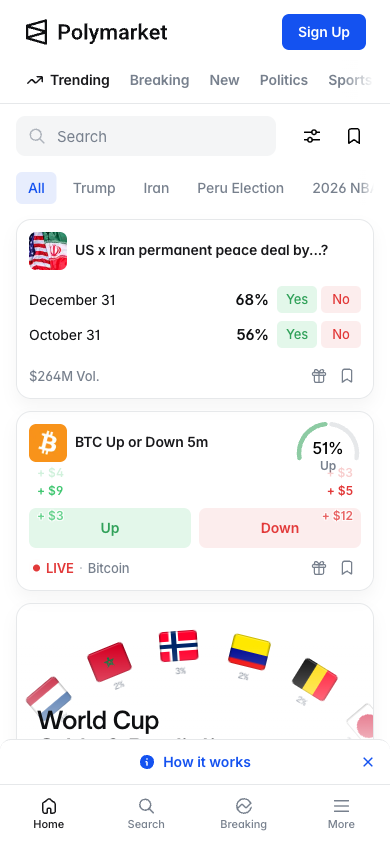
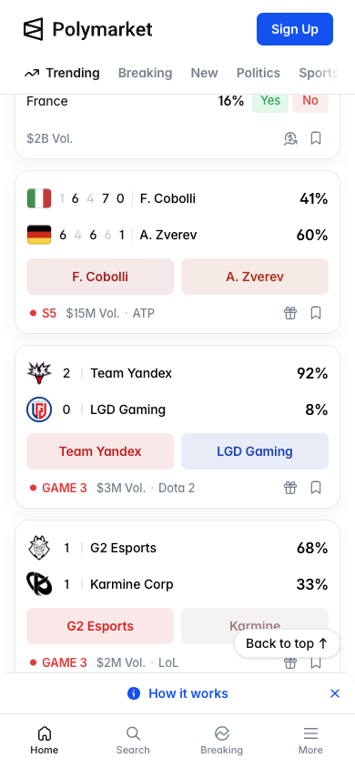
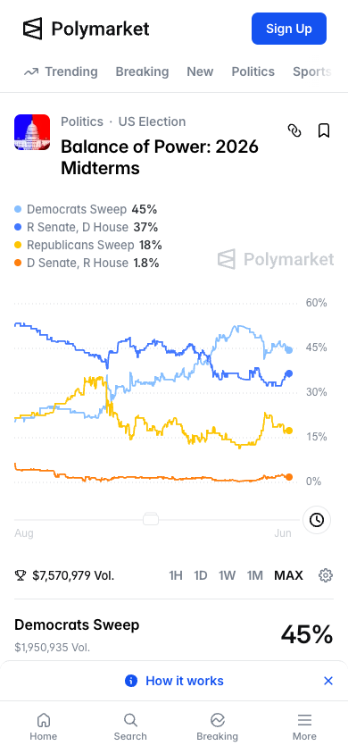
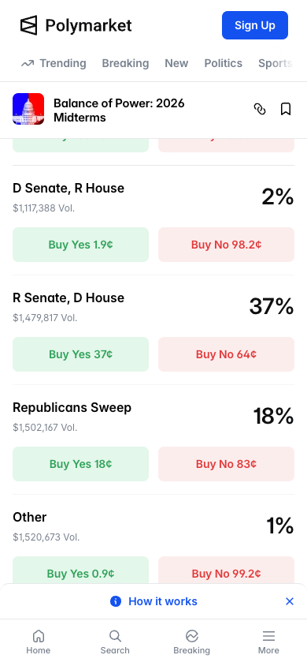
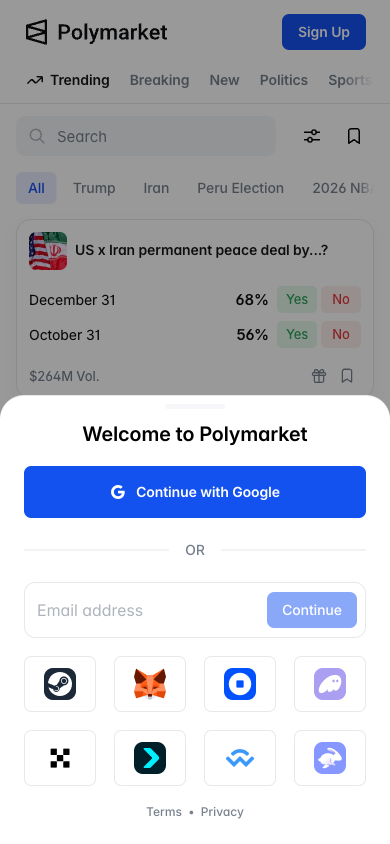
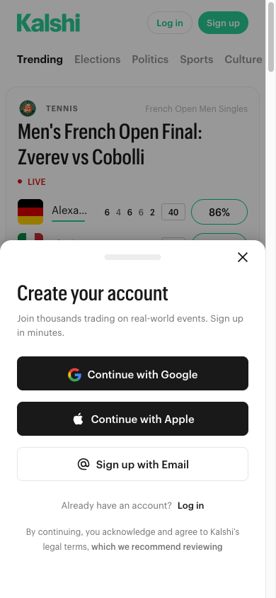
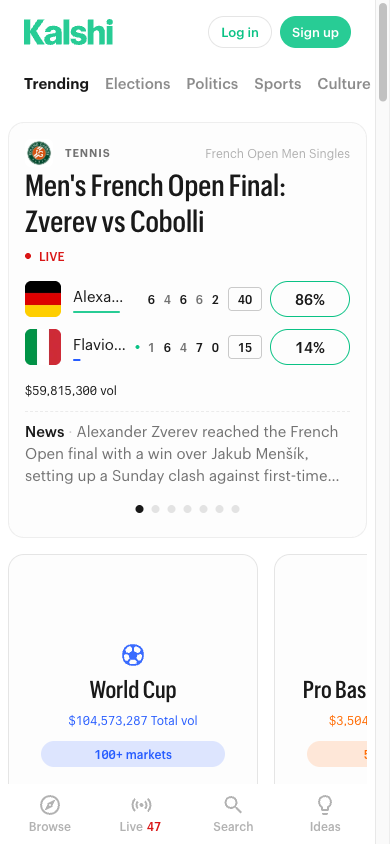
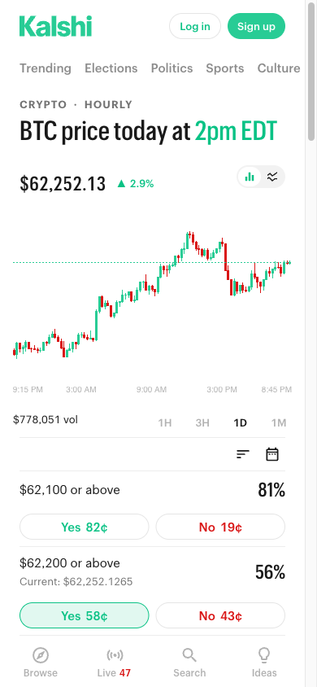
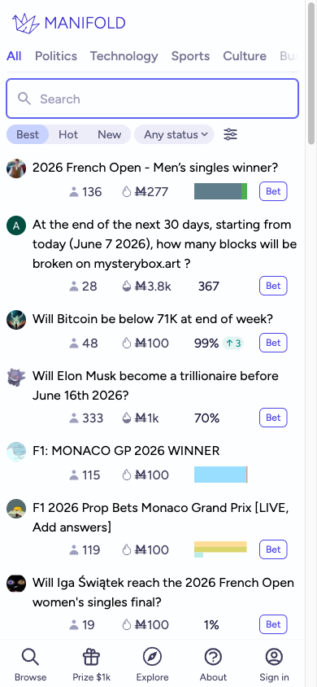
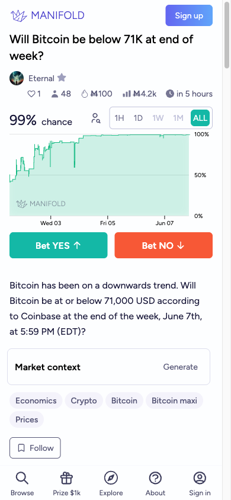
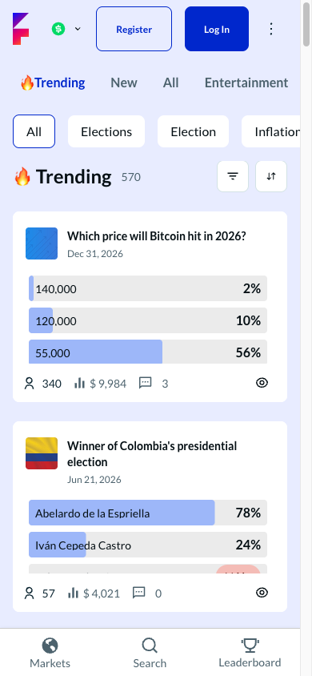
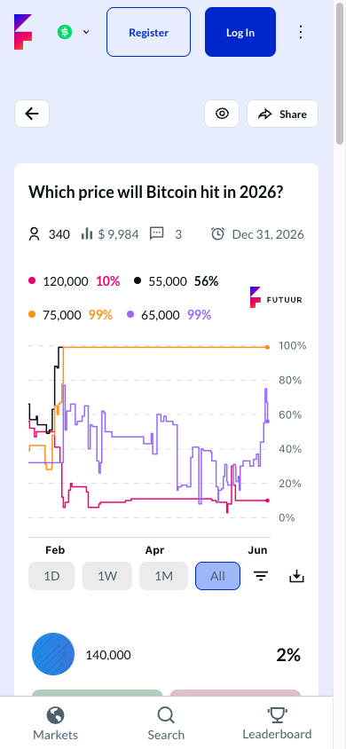
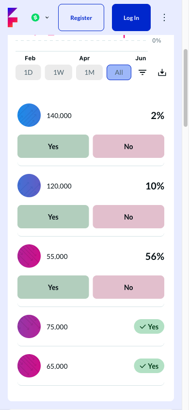
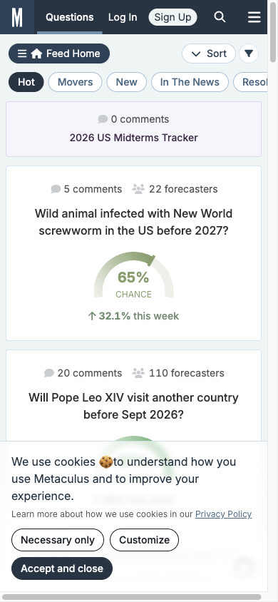
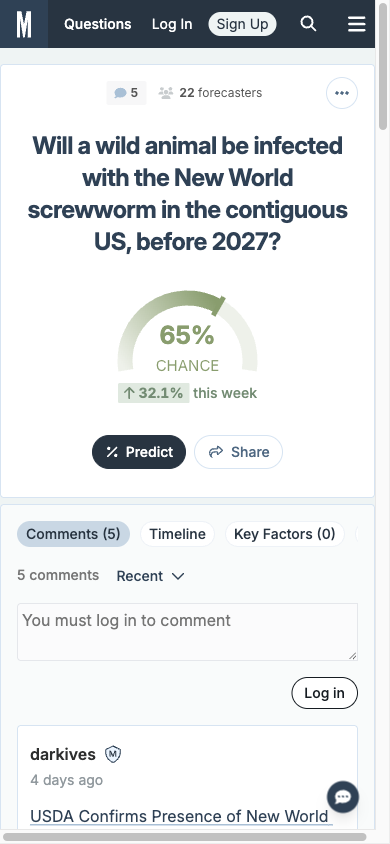
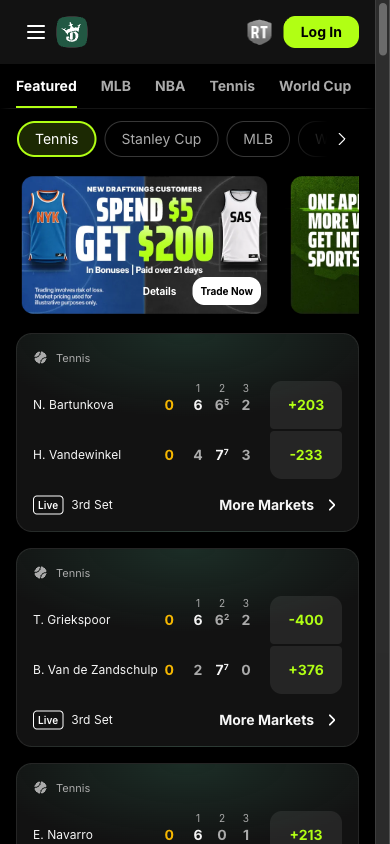
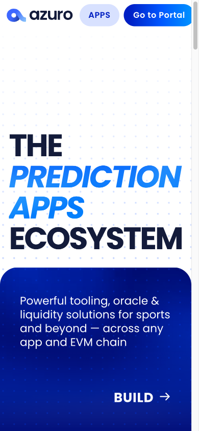
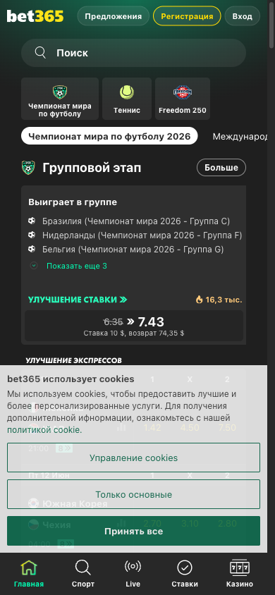
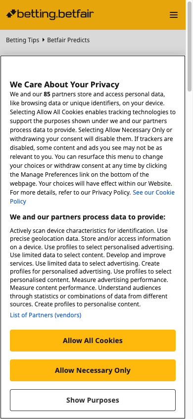
Trust & First-Time Credibility v_refresh · new product set
Trust is the #1 value of our audience (20-40, real money). Prior benchmark (Revolut/Coinbase/Robinhood/Kalshi/Polymarket) mixed prediction markets with unrelated fintech. New set: top 3 HARD + 1 SOFT + 1 ASPIRATIONAL — specific to our market.
Products evaluated
Scores (1–5) · 8 criteria × 5 products
| Criterion | Polymarket HARD | Kalshi HARD | Futuur HARD | Bet365 SOFT | Revolut ASPIRATIONAL |
|---|---|---|---|---|---|
| C1 Regulatory transparency | 2 | 5 | 1 | 5 | 5 |
| C2 Funds protection | 1 | 4 | 1 | 4 | 5 |
| C3 Fee transparency before action | 2 | 3 | 2 | 3 | 4 |
| C4 Social proof | 4 | 3 | 2 | 5 | 5 |
| C5 First impression clarity | 3 | 4 | 3 | 5 | 4 |
| C6 Onboarding friction | 2 | 2 | 2 | 3 | 3 |
| C7 Risk communication | 3 | 4 | 1 | 4 | 3 |
| C8 Resolution clarity | 2 | 3 | 2 | 4 | 3 |
| Total | 19 | 28 | 14 | 33 | 32 |
Top 3 mechanisms to carry into MVP
Immediate product clarity on landing
Within 3 seconds: what is this, who is it for, what do I do. Show a live market with context — no signup required. Event + probability + brief context + YES/NO. The user must understand the product before being asked to register.
Concrete promise of funds protection
"Your USDC is held 1:1. We never lend it without your permission." Not legal text — one plain sentence on the first deposit screen. Futuur scores 1/5 here. Our closest analog leaves this completely unaddressed. The gap is wide open.
Resolved markets as social proof
"N markets resolved correctly · since [date] · all on-chain verifiable." Our equivalent of "80M users." At MVP we have no user count. Resolved market count is a signal we can build from day one and display honestly from the first week.
1 Mechanism that won't work
Regulatory badges (FSCS / SIPC / FDIC / CFTC) or simulating Bet365's brand authority
These badges require real licenses we do not hold. Bet365 scores 33/40 through 20 years and 30+ licenses — that track record is not copyable at launch. FTX built a "bank-like look" without bank-like guarantees.
Alternative: on-chain transparency — "All settlements are on-chain. Any user can verify every resolved market." Be explicit about what we are not: "We are not a bank or broker. Your USDC is held in a smart contract, not lent out."
Screens — Trust signals
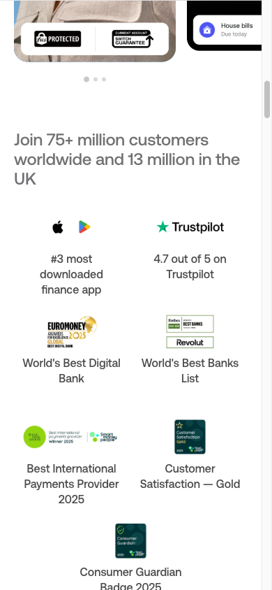
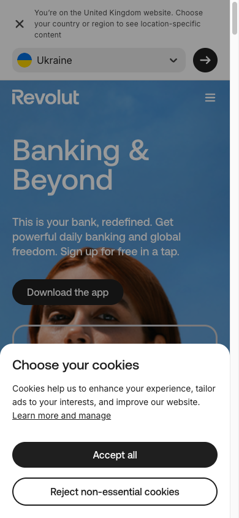
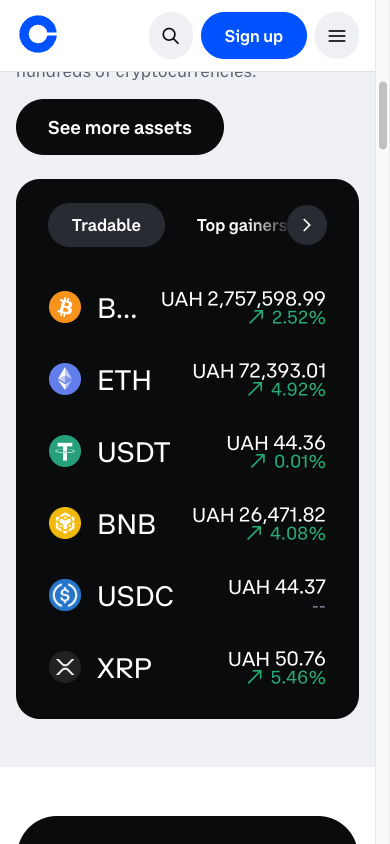
Interaction architecture
The key behavioral pattern of our audience is Event-triggered arrival: the user comes when something happens. How we greet them "arriving from a news story" determines activation and the first bet.
5 Fundamentally different patterns
Story-driven Discovery
Event = narrative unit: context + why it matters now + what the market says + resolution conditions → bet CTA.
Where: nowhere in PM fully. Partially — Metaculus (question descriptions), The Athletic (sports + context).
Event Feed
Algorithmic feed of cards. User scrolls, stops on what catches their eye.
Where: Polymarket, Kalshi, Twitter, TikTok. Breaks with <20 markets and for new users.
Portfolio / Position-first
First screen — open positions, P&L, deadlines. New markets in a separate tab.
Where: Robinhood, Binance. Empty state for new users = demotivation.
Guided Challenge
"Bet of the day" — one choice, two buttons, game loop. Minimum cognitive load.
Where: Duolingo, HQ Trivia. Gets boring after 5–7 sessions.
Market Board
Table of all markets: price, volume, 24h change. Filters are the main navigation.
Where: Kalshi advanced, Bloomberg, Binance. New users leave immediately. Kills emotional connection to the event.
Why Story-driven — 3 reasons
Direct match with JTBD J2
"Follow events with a real stake" — this is about context, not numbers. The user arrives from a news story and wants to understand what's happening. Story-driven gives that context inside the product.
Closes the market's main gap
No competitor explains why the price is what it is or what will affect the outcome. Markets are isolated questions without context. This is our differentiator.
Builds trust without regulatory badges
Clear event description + resolution conditions + source = the platform knows what it's talking about. Trust through content transparency — our alternative to FSCS/SIPC.
Condition X for Event Feed: >30 active markets and the user has already placed their first bet. Story-driven for first contact → Feed for return visits.
Gaps & Hypotheses
Gaps — confirmed by research
Hypotheses — if / then / because
Open questions — before wireframes
Users — what the data actually says
111 search agents · 28 sources · 116 claims extracted → 4 confirmed after adversarial 3-vote verification · 21 killed
Angles: friction vs. motivation · post-loss behavior · play-money conversion · event spikes · trust signals · TAM · time-to-first-bet
Confirmed findings
Context: 19 federal lawsuits against Kalshi by Jan 2026. Class-action from user who lost tens of thousands in one month. Single anecdote — directionally credible, not statistically proven.
What we still do not know — no data survived verification
The central question shifted: not "will News Junkies come?" but "what happens after their first loss, and do they stay?" This cannot be answered by research — only by real traffic data. First-bet completion rate and day-7 retention after a first loss are the two metrics that will confirm or kill the Riskiest Assumption. The post-resolution loss screen is the highest-priority untested retention intervention. Design it before launch. Measure it as the first post-launch signal.